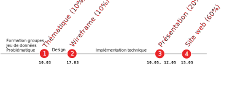

Visualisation de données
1. Introduction + SVG
Noemi Romano
noemi.romano@heig-vd.ch
Qu'est-ce que la visualisation de données ?
visualisation) de l'information (données)
Pourquoi la visualisation de données ?
Explorer: trouver les tendances

Diagram of the causes of mortality in the army in the East, Florence Nightingale, 1858
Analyser: tester une hypothèse


L'épidémie choléra de Broad Street, John Snow, 1854
Présenter: raconter une histoire


La Carte figurative des pertes successives en hommes de l’Armée française dans la campagne de Russie en 1812-1813, Charles Joseph Minard, 1869
Fonctions et formes de visualisation
Mount Everest, South China Morning Post
Banques éuropéennes et dette, Giorgia Lupi

How the virus got out, New York Times

Votations fédérales, RTS
Quels sont les outils de visualisation de données intéractive ?
Objectifs
- Connaître différentes technologies de visualisation de données dans un navigateur Web
- Maîtriser la librairie d3.js
- Connaître une librairie de cartographie web
- Maîtriser la manipulation des donneés avec JS
Evaluation
Projet
Supports
-
COURS
Cyberlearn (clef d'inscription
VisualDon22 )
EXERCICES
Repo
GitHub
Questions?
D3 & SVG
D3.js is a JavaScript library for manipulating documents based on data. D3 helps you bring data to life using HTML, SVG and CSS
SVG
Scalable Vector Graphics(graphique vectoriel adaptable)

Système de coordonnées
Formes et textes
Path
Move to (M x y) Line to (
L x y) Horizontal line (
H x) Vertical line (
V y)
Courbes
Groupes
Transformation
translate(x,y) rotate(angle, cx, cy) scale(facteur_echelle)
Et maintenant... au boulout!

Rendez-vous sur
Git